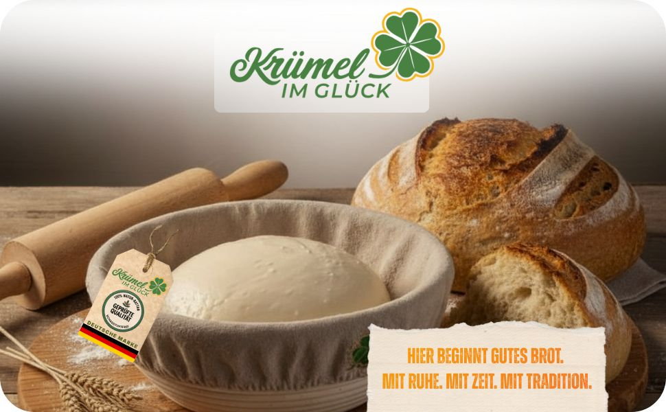
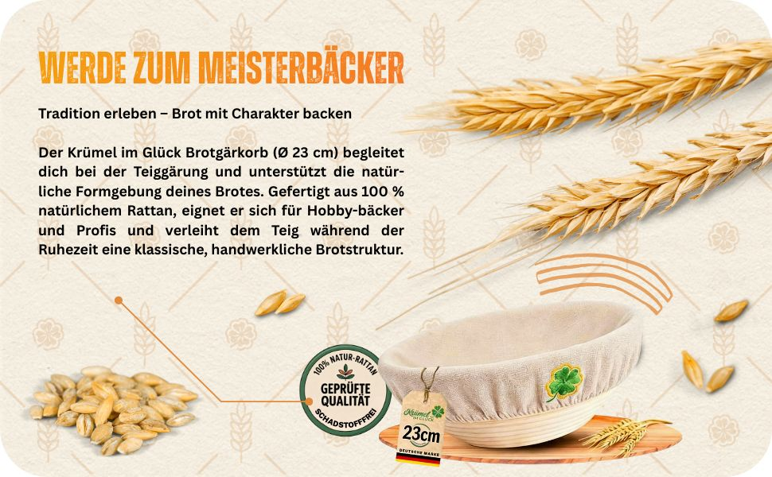
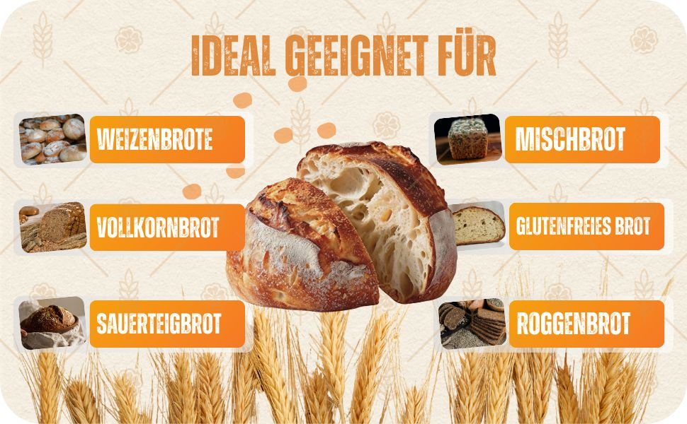
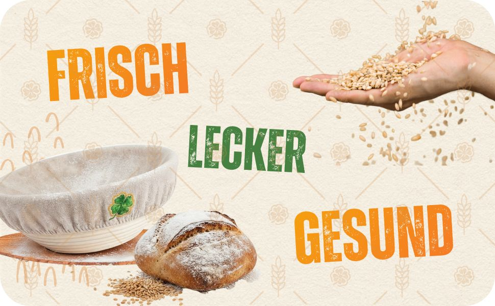
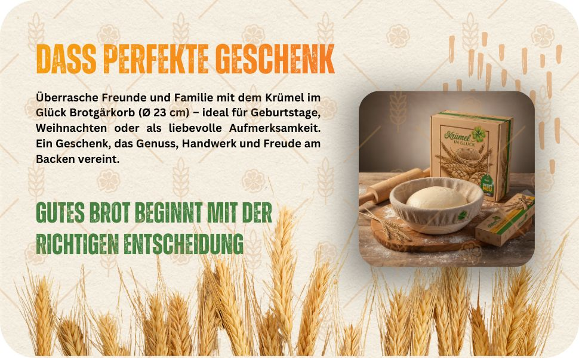
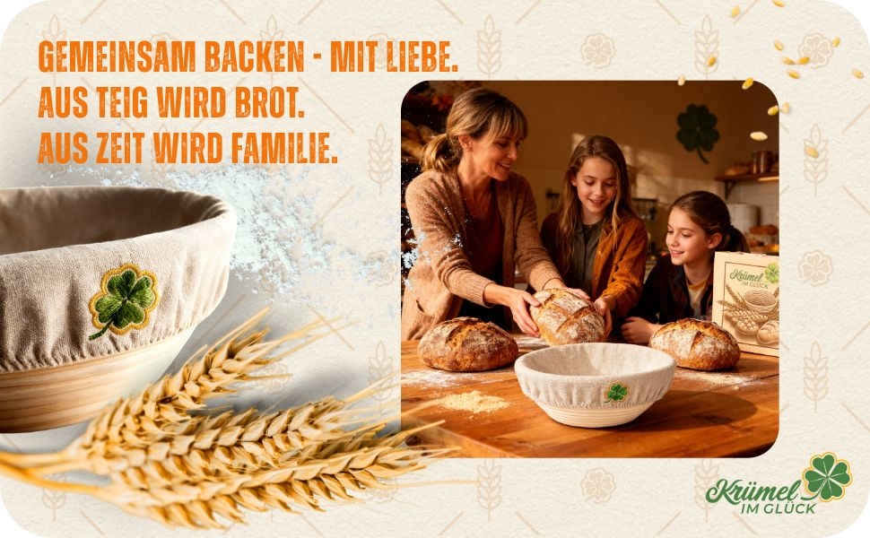
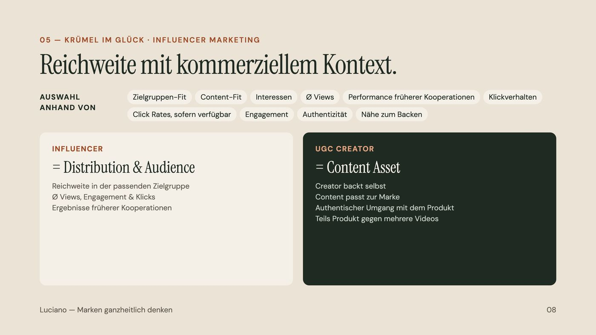

Social & Creator
- Unterstützung beim Launch
- Social Media und Produktkommunikation
- Creator-Recherche nach Kennzahlen
- Outreach und UGC-Kooperationen
Ein Brotgärkorb aus Rattan, der auf Amazon durchstarten sollte. Vom Launch an war ich Teil des Projektteams und habe Social Media, Influencer und den Amazon-Auftritt betreut.
Die Idee
Hier beginnt gutes Brot. Mit Ruhe, mit Zeit, mit Tradition.
Der Gärkorb von Krümel im Glück (Ø 23 cm, 100 % natürliches Rattan) richtet sich an Hobby-Bäcker und Profis. Die Aufgabe: das Produkt zum Launch sichtbar machen und auf Amazon verkaufen.
Ich habe dabei nicht nur Inhalte gebaut, sondern immer mit Blick auf Kennzahlen gearbeitet: Wer hat die passende Zielgruppe, welche Inhalte bringen Klicks, was verkauft.

Was ich gemacht habe






Ergebnis
Die Umsätze sind ein Teamergebnis des gesamten Projekts.